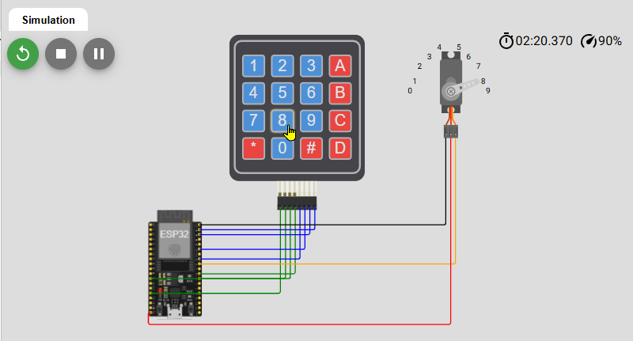
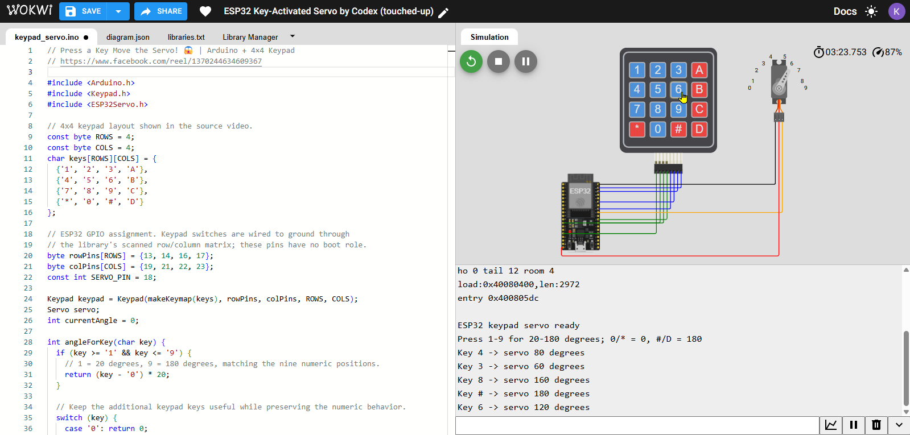
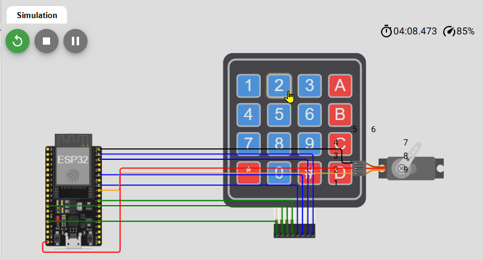
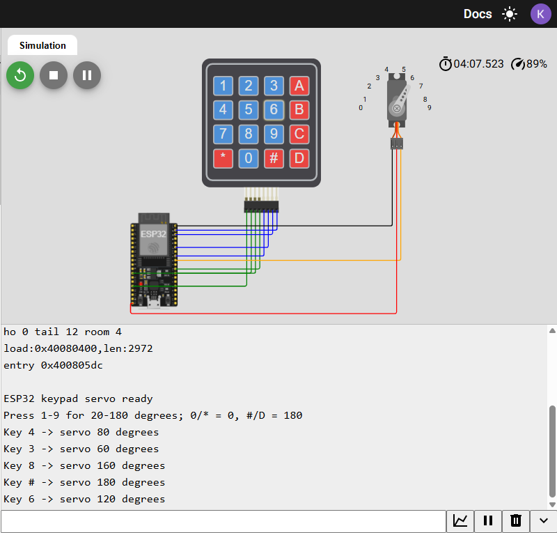

Video reference
The Facebook Reel establishes the keypad-and-servo behavior, but offers no written source.
ESP32 / WOKWI PROJECT
A development story from an Arduino reference video to a readable, testable ESP32 circuit.

THE DEVELOPMENT QUESTION
The core interaction stays stable while the implementation becomes more portable, readable, and observable.
The Facebook Reel establishes the keypad-and-servo behavior, but offers no written source.
The Arduino Uno interaction is rebuilt with ESP32 GPIOs and ESP32Servo.
Reference circuits resolve endpoint naming, monitor wiring, and visual clarity.
HARDWARE / PIN EVOLUTION
One controller, one input surface, and one actuator are enough to make the interaction tangible.
SOFTWARE ARCHITECTURE
keypad.getKey()angleForKey()servo.write(angle)EVIDENCE



PROBLEMS → DESIGN RULES
USER-VISIBLE RESULT
Numeric keys select a 20°–180° range. Extra keys provide fixed endpoints, while Serial Monitor reports the accepted command.
RESOURCES